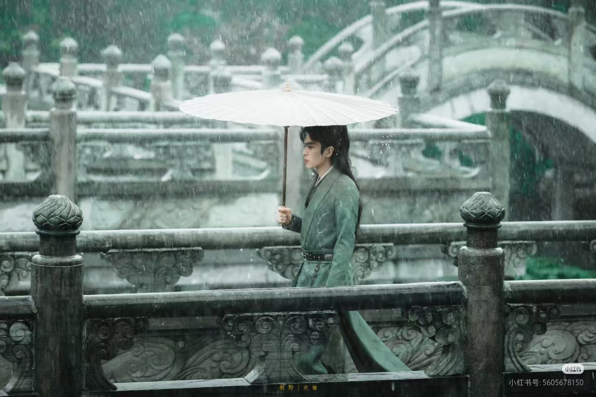
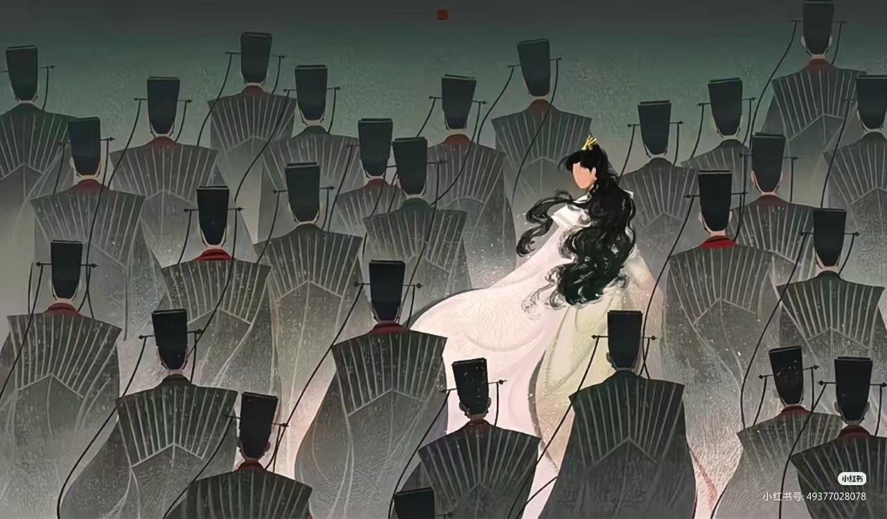
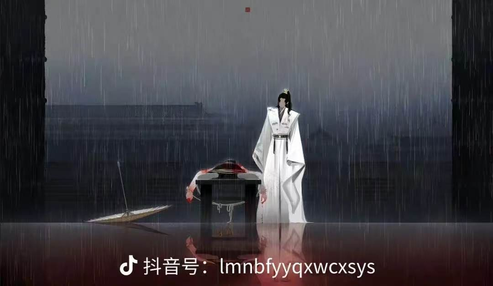
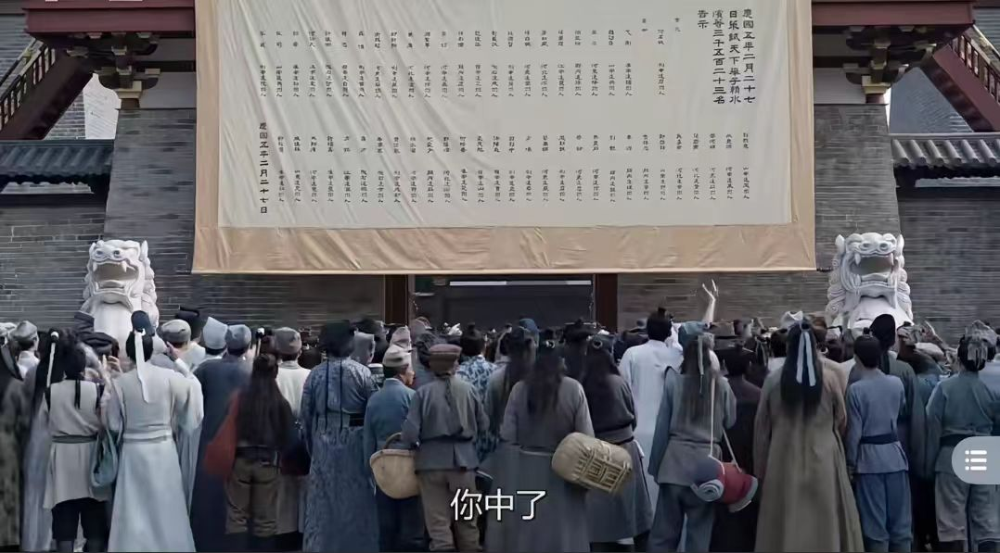
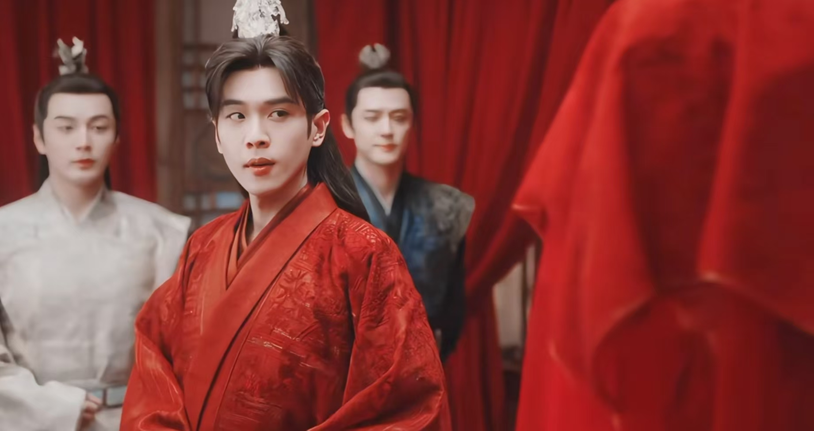
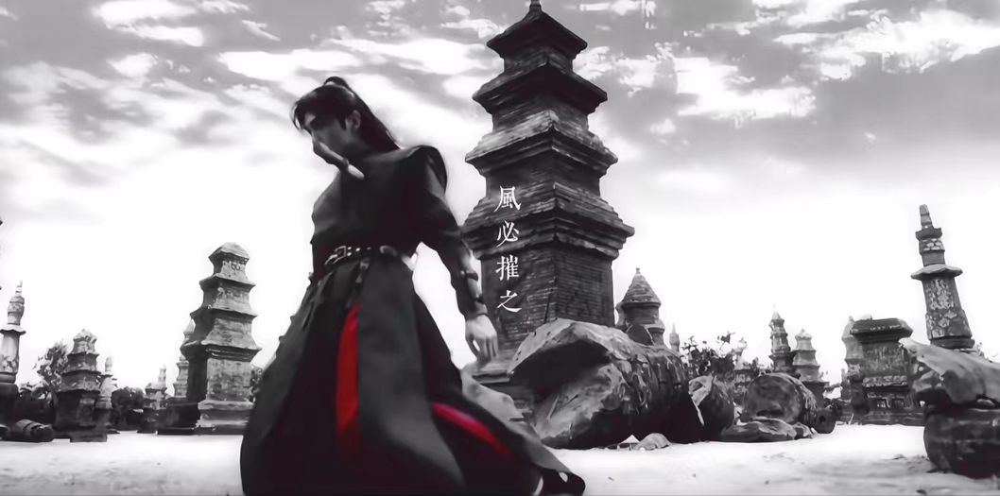
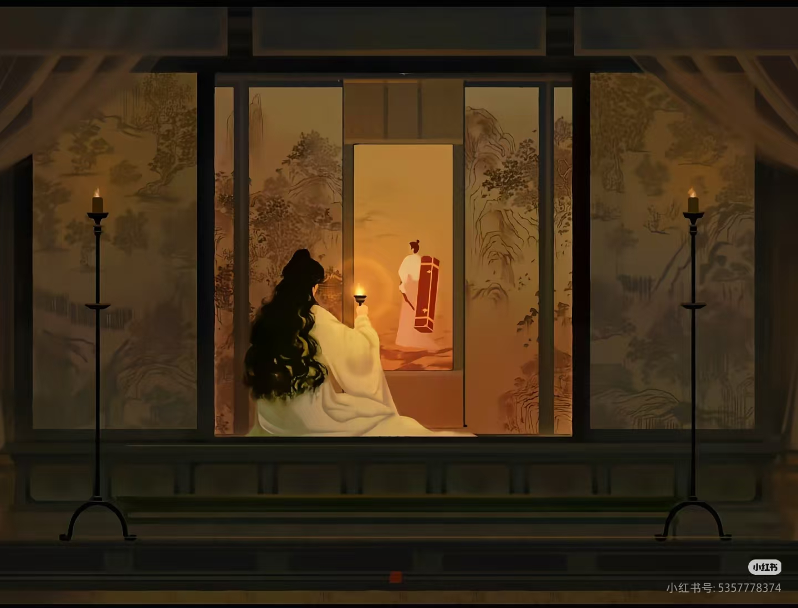

底层苍生之殇
京都权贵子弟横行霸道，在抱月楼肆意施暴、草菅人命，酿成惊天惨案。 普通百姓老金头千里赴京，只为见流落京都的女儿一面，却无辜卷入纷争，最终惨死乱世之中。 一介底层平民的卑微离世，无人追责、无人问津，淋漓尽致揭露了庆国阶层固化、权贵当道、底 层命如草芥的残酷现实。此事深深刺痛范闲，让他彻底坚定初心：不止自保，更要为底层苍生争 公道、整肃朝堂吏治。

京都权贵子弟横行霸道，在抱月楼肆意施暴、草菅人命，酿成惊天惨案。 普通百姓老金头千里赴京，只为见流落京都的女儿一面，却无辜卷入纷争，最终惨死乱世之中。 一介底层平民的卑微离世，无人追责、无人问津，淋漓尽致揭露了庆国阶层固化、权贵当道、底 层命如草芥的残酷现实。此事深深刺痛范闲，让他彻底坚定初心：不止自保，更要为底层苍生争 公道、整肃朝堂吏治。
历经多次朝堂博弈与危机，范闲凭借智谋与胆识，获庆帝默许、陈萍萍 扶持，正式接管鉴查院一处。手握监察百官、查办冤案的实权，彻底拥 有了立足京都、对抗权贵的资本。面对鉴查院积弊深重、官场沆瀣一气 的乱象，范闲摒弃旧规、雷厉风行，打破官官相护的潜规则，秉公办案、 整顿风气，在黑暗官场中坚守法度底线，悄然培植属于自己的正道力量。

都察院固守旧规、迂腐僵化，一众御史依附权贵、趋炎附势，以 “礼法 旧规” 束缚新政、构陷良臣。范闲推行公正法度、整顿乱象的举措，严 重触碰了旧官僚集团的利益，由此与都察院展开多轮激烈对峙。朝堂辩 论、案牍交锋、舆论博弈，范闲跳出封建礼法的桎梏，不循旧路、不随 世俗，以通透清醒的姿态直面整个腐朽文官集团，尽显革新者的决绝与 孤勇。

都察院御史赖名成，是朝堂之中难得的清正清流。他刚正不阿、不畏强 权，看不惯权贵结党营私、欺压百姓，屡次直言上书、死劾当朝权贵与 官场弊政。奈何朝堂黑暗、权大于法，他的忠义直言触怒既得利益集团， 最终被罗织罪名、含冤赐死。一代清官含冤而终，朝野震动，更让范闲 彻底看清：庆国的病根从来不是个别贪官，而是腐朽固化的皇权体制， 而追寻正义，从来都要付出血的代价。

三年一度的春闱大比，本是寒门学子逆天改命、朝堂选拔贤才的公正 之路，却被权贵世家暗箱操作、肆意践踏。朝野上下盘根错节的势力 联手操纵考场、徇私舞弊，埋没寒门英才。范闲临危受命彻查此案， 深陷皇子之争、世家博弈、朝堂站队的多方夹缝之中。他顶住层层施 压与威逼利诱，不惧权贵、深挖到底，撕开了科举背后藏了数十年的 肮脏黑幕，撼动了世家垄断仕途的根基。

范闲与林婉儿历经种种阻碍，终得大婚。这场举国瞩目的盛世婚礼， 表面琴瑟和鸣、喜庆圆满，是京都最盛大的喜事，实则是朝堂各方 势力重新洗牌的关键节点。长公主、太子、二皇子、世家权贵各怀 心思，借婚礼窥探局势、拉拢势力、布下新局。红妆之下暗藏刀光， 喜乐之中藏尽算计，看似圆满的姻缘，终究深陷权谋棋局，为后续 朝野大乱埋下重重伏笔。

金秋悬空庙赏菊盛会，朝野权贵齐聚一堂，看似太平盛世、君臣同乐， 实则杀机暗藏。顶级刺客影子悄然潜伏、伺机而动，当众刺杀庆帝。 危急关头，范闲不顾自身安危挺身护驾，身受重伤、九死一生。这场 刺杀彻底打乱朝堂格局，庆帝借机清洗异己、拿捏朝局，同时也让范 闲彻底看透庆帝的深沉心机与无情本性，君臣之间的猜忌与隔阂彻底 爆发，二人看似和睦的君臣关系，彻底走向破裂。

随着层层迷雾被层层拨开，尘封数十年的终极秘密公之于众：范闲并 非范建养子，而是庆帝与叶轻眉的亲生之子。这个惊天真相颠覆了所 有人的认知，也彻底改写了范闲的一生。他与庆帝不再是简单的君臣， 而是血脉相连、宿命对立的父子。一边是生养自己的帝王生父，一边 是母亲含恨而终的血海深仇，亲情与仇恨、宿命与初心相互拉扯，让 范闲彻底陷入两难绝境，朝堂处境瞬间凶险万分。
身世真相大白、京都风波暂歇后，范闲主动接下重任，奉旨南下江南， 全权接管内库产业。江南看似富庶太平，实则地方势力盘根错节、世 家垄断财权、贪腐横行、乱象丛生。这既是庆帝对他的试探与制衡， 也是范闲跳出京都困局、培植自身势力、推行革新理念的全新契机。 褪去少年意气，背负苍生与执念，孤身南下，奔赴一场更艰难、更辽 阔的乱世征途。